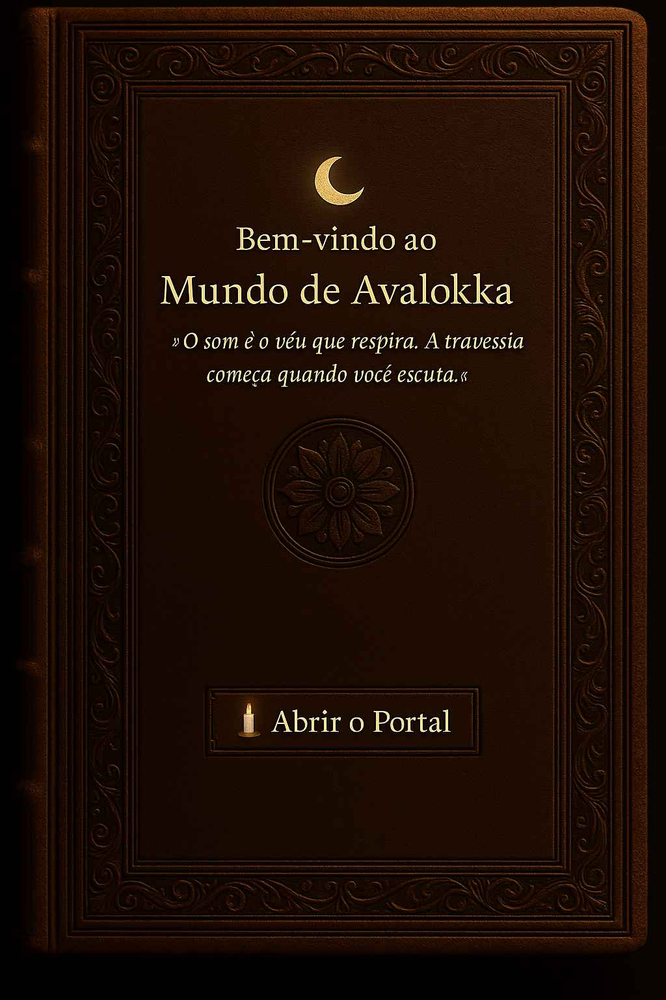

📖 O Livro do Avalokka
Um livro que não apenas fala — respira. Um objeto ritual que carrega imagens, selos e palavras bordadas com silêncio.
Esta obra é o espelho impresso do templo. Suas páginas caminham entre o tangível e o invisível, revelando fragmentos da travessia cerimonial que o Avalokka propõe.
Em breve, será possível adquiri-lo, tocá-lo, e permitir que ele toque também.